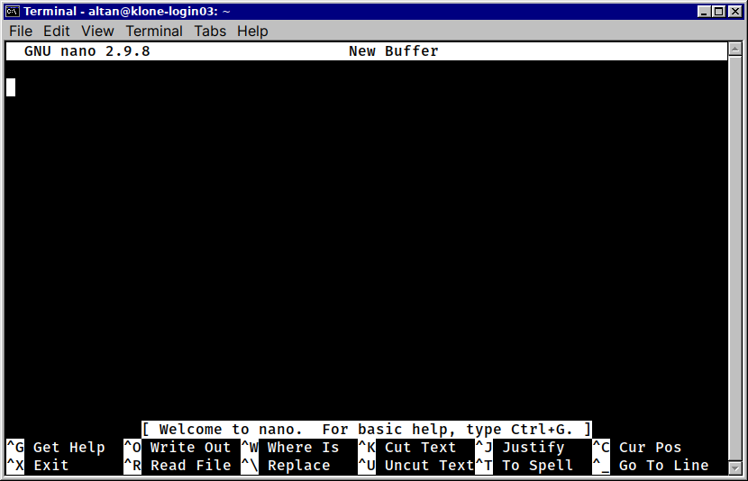
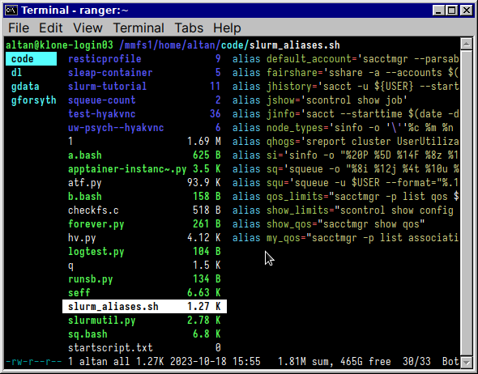

HPC Workshop (R)
HPC Workshop (R)
Welcome to this workshop on High Performance Computing (HPC) using the University of Washington’s Hyak cluster. This workshop is designed to give you a basic understanding of how to use the cluster for your research using a practical example of running a computationally intensive bootstrap for data analysis.
Aims
- Understand how HPC can accelerate your research
- Learn how to log in to Hyak and navigate the file system
- Learn how to submit jobs to the cluster and manage them
- Wrap your analysis in an Apptainer container for reproducibility and portability
- See how you can use array jobs to accelerate your analysis
More resources
What is an HPC cluster?
- A cluster is a group of computers that work together to solve problems
- An HPC cluster is a cluster of computers that are optimized for running computations that require a lot of CPU power and memory
- The Hyak cluster at the University of Washington has hundreds of computers that are connected together and can be used to run computations in parallel
- More than 21,000 CPU cores and 1,000 GPUs
Why use an HPC cluster?
Speed!
- CPU power: Multiple high-performance CPUs per node (56 on
gpu-a40nodes) - Memory: Oodles of RAM (1 TB on
gpu-a40nodes) - GPU: Some nodes have GPUs, serious speed increases for certain types of computations (e.g., machine learning)
- Parallelism: Run computations in parallel across many different computers
Prerequisites
Before you can log in to Hyak, you will need:
- A UW NetID
- A SSH client (e.g. PuTTY, MobaXterm, or the terminal on Mac/Linux) on your laptop
If you have not set up an SSH client, visit https://uw-psych.github.io/compute_docs/docs/start/connect-ssh.html for instructions.
Logging in to Hyak
To log in to Hyak, open your SSH client and enter the following command:
Replace your-uw-netid with your UW NetID and enter your credentials when prompted.
The file system
The file system on Hyak is organized as a hierarchy:
/- the root directory/mmfs1- the main user file system for Hyak/mmfs1/home- the root of the home directory for all users/mmfs1/home/your-uw-netid- your home directory (only 10 GB!)
/gscratch- data directory for Hyak users/gscratch/scrubbed- a directory for temporary files that are periodically deleted
Your home directory (~)
Once you have logged in, you will be in your home directory on the Hyak cluster.
- Home directory is
C:\Users\Youon Windows or/Users/Youon Mac - Stored under
/mmfs1/home/your-uw-netid - Can use
~for short in the command prompt
Caution
Your directory is limited to 10 GB. Do not store large files here! Use the /gscratch directory instead.
Listing files
List the contents of your ~ by typing ls into the command prompt and pressing Enter:
Move to another directory with cd, e.g.:
The shell
bashis the command-line interface we have been using- Both an interpreter and a programming language
- Use interactively to run commands
- Write scripts to automate tasks
bash
Comments
In bash, anything after # is a comment (like Python, R).
Environment variables
Environment variables help pass inputs to a script. Set environment variables with:
bash: History and Completion
- Use
↑and↓keys to recall the text of the commands you have run before - Use
Tabto complete file names, commands etc.- e.g.,
cd /gscr+Tab→cd /gscratch
- e.g.,
Editing files
Use a text editor to edit text files (scripts, etc.)
nanois a good one if you’ve never tried one before

Viewing files
Use:
catto view short files- Use
moreto view long files- …or
less
- …or
Getting help with commands
mandisplays the manual page (“manpage”) for a commandman ls- displays the manual page for thelscommand.- “manpages” tend to be exhaustive and overwhelming!
- Add
--helpto a command to get a shorter, more user-friendly help message for many commands
tldr for quick command reference
tldr: A supplement to man pages providing practical examples:

ranger
ranger is an easy-to-use program to navigate the file system:
- Navigate using arrow keys
- Open files with
Enter - Exit with
q

SLURM
- Jobs: programs/scripts you want to run + resources allocated for them
- Jobs on Hyak are scheduled using the SLURM workload manager
- Specify the resources you need when submitting a job
- Job runs when SLURM determines there are enough resources available
- Submitting a job runs it on the cluster when the resources are available
Login & Compute Nodes
- The login node is the computer you are connected to after running
SSH - Use the login node for submitting and managing jobs, minor tasks like editing a script or copying a handful of files
- Do not use it to run your computations
- Compute nodes are where your jobs will run
- The scheduler will allocate resources on the compute nodes to your jobs
- Jobs can be run in parallel on multiple compute nodes
Resource availability
The main resources you will be concerned with are:
- CPUs - the number of CPU cores you can use
- Memory - the amount of RAM you can use
- GPUs - the number of GPUs you can use
hyakalloc
hyakallocshows the resources available to you across all the nodes on the cluster
- A job made to run on a single node will have to wait for all the resources it needs to become available on a single node

The queue
- Jobs are submitted to a queue in SLURM
- Use
squeueto see the jobs in the queue that are running or waiting to run
- Use
squeue --meto see only your jobs in the queue
Interactive session
- An interactive session is a way to get access to a compute node for a short period of time
- Use an interactive session to test your code, run small jobs, or debug problems
- Use the
salloccommand to start an interactive session
Launching an interactive session
To launch a job, you will need to specify the resources you need, the account to charge the resources to, and the partition – group of resources – to run the job on.
For a session using the escience account, the gpu-a40 partition, 1 hour of time, 1G of memory, 1 CPU:
You may have to wait for resources to become available – use squeue to check the status of your request.
Running commands in an interactive session
When your interactive session starts, you will be given a prompt on a compute node where you can run commands and test your code. For example, you can run the hostname command to see the name of the compute node you are on:
Any commands you run in the interactive session will be run on the compute node you are on and will not affect the login node.
Apptainer
- We need to use Apptainer (f.k.a. Singularity) to run R on Hyak
- Apptainer is a tool for creating and running software containers (like Docker, Podman)
- Containers help you package an application and its dependencies so that it can run consistently (and reproducibly) across different environments
- An Apptainer container is like a lightweight, portable, and self-contained virtual machine – c.f., VirtualBox, VMware, Parallels, etc.
Running R interactively
In the interactive session, we can download and run R as follows:
# Create the directory to store your things if it isn't there:
mkdir -p "/gscratch/scrubbed/$USER"
# Go to the directory:
cd "$_"
# Download the image to the file r-latest.sif:
apptainer pull --disable-cache r-latest.sif docker://r-base:latest
# Launch R:
apptainer exec --bind /gscratch r-latest.sif RExiting
- Exit R as normal
- When you’re back in the shell, If you run
exitorCtrl+D, the interactive session will end
Questions?
Do you have any questions about what we’ve covered so far?
Running an example analysis
Practical example
Obtaining confidence intervals for a point estimate using the bootstrap
- The bootstrap is a resampling method that can be used to estimate the sampling distribution of a statistic
- Requires running the same analysis many times on different samples of the data
- Can be extremely computationally intensive
- Many opportunities for running these repeated computations in parallel
Dataset
- Personality data from the SAPA project (“Synthetic Aperture Personality Assessment,” Revelle, W.) from
psychTools
- 2800 rows, 6 cols – each row an individual subject
- 1 demographic column (
gender) with 2 genders coded - 5 columns of scored personality scales:
- Agreeableness (
agree) - Conscientiousness (
conscientious) - Extraversion (
extraversion) - Neuroticism (
neuroticism) - Openness (
openness)
- Agreeableness (
Goal
- Estimate the 95% confidence interval for Cohen’s d of the mean difference among two genders using the bootstrap
- For each category, resample the data with replacement
- Calculate Cohen’s d
- Repeat this process many times (e.g., 10,000 times)
- Use the distribution to estimate the 95% confidence interval using
boot
Setup
Create a new directory for the project under /gscratch/scrubbed/your-uw-netid:
Download the project files from GitHub, navigate to the project directory, and list the contents:
Setup (cont.)
We will use a R script for our computations – workshop-01/split-job.py:
Batch jobs
- Can’t use an interactive session for this – need to submit a batch job
sbatchcommand submits a batch job to SLURM- Commands to run the job are specified in a job script
- Job script specifies the resources to request, the commands to run, and the environment variables to set
workshop-01-R/sbatch-r.jobcontains our job script
The job script
Have a look at the job script in sbatch-r.job. We will submit this to sbatch, which will schedule and launch our tasks.
Job metadata and resources
The following defines metadata and resources to request to run the job. These parameters are defined with #SBATCH:
Environment variables
We use an environment variable to define where we want to store the Apptainer image file and how many iterations to run:
# The parameters to apptainer are specified by environment variables.
# The commands below will use the default values specified below unless
# these environment variables are already set. (this is what the :- means)
# R_IMAGE:
# The path to the apptainer image to use
R_IMAGE="/gscratch/scrubbed/${USER}/r-latest.sif"
# Create the base directory for the image:
mkdir -p "$(dirname "R_IMAGE")"Environment variables (cont.)
We use another environment variable to define how many iterations to run:
# SCRIPT SETUP:
# The parameters to the R script cam be specified by environment variables.
# They must be exported so that they are visible to the R script.
# The commands below will use the default values specified below unless
# these environment variables are already set. (this is what the :- means)
# BOOT_ITER:
# The number of bootstrap iterations to run
export BOOT_ITER="${BOOT_ITER:-10000}"Downloading the image
The following downloads the image to the location $R_IMAGE, unless it exists already (which || allows):
Running the jobs
Here, we launch a job for each category we want to compute on:
Combining the output
Once the job is done, we need to assemble the output. We have a separate script for that – merge-outputs.R:
Submitting the job
Navigate to the workshop-01-R directory if you’re not already there:
Submit an array job to SLURM using the sbatch command, using the ckpt paritition:
Monitoring the job
As usual, you can use the squeue command to monitor the status of your job:
But there’s another way you can track progress in real time…
Log files
sbatch-r.jobspecifies a location for the output files and the log files for the array job- Files with the extension
.logcontain what the job would print to the screen - Read log files to track the progress of the individual jobs in the array with
tail -f:
Press Ctrl + D to stop following the log files.
Getting the results
Use scp to copy the results from the cluster to your local machine:
scp -r your-uw-netid@klone.hyak.uw.edu:/gscratch/scrubbed/your-uw-netid/hpc-workshop/workshop-01/output/combined.csv .
Q&A
Questions?